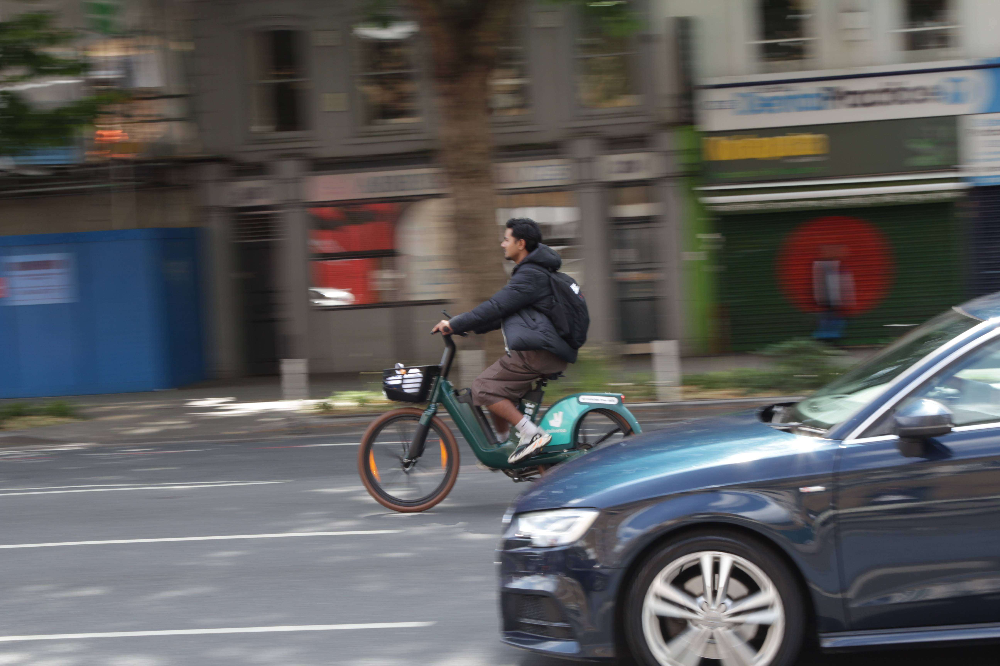
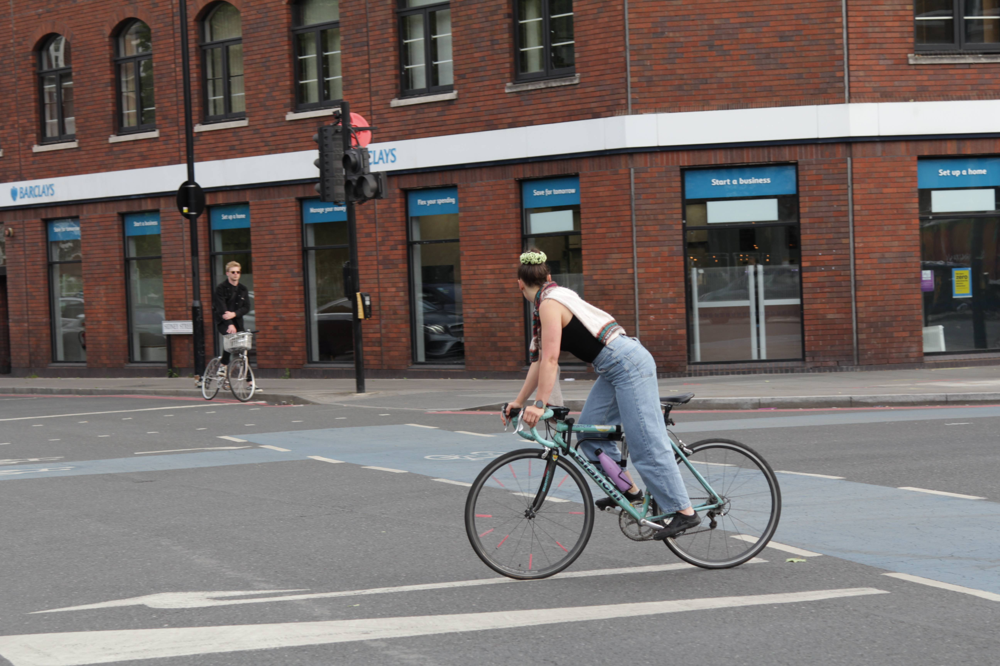
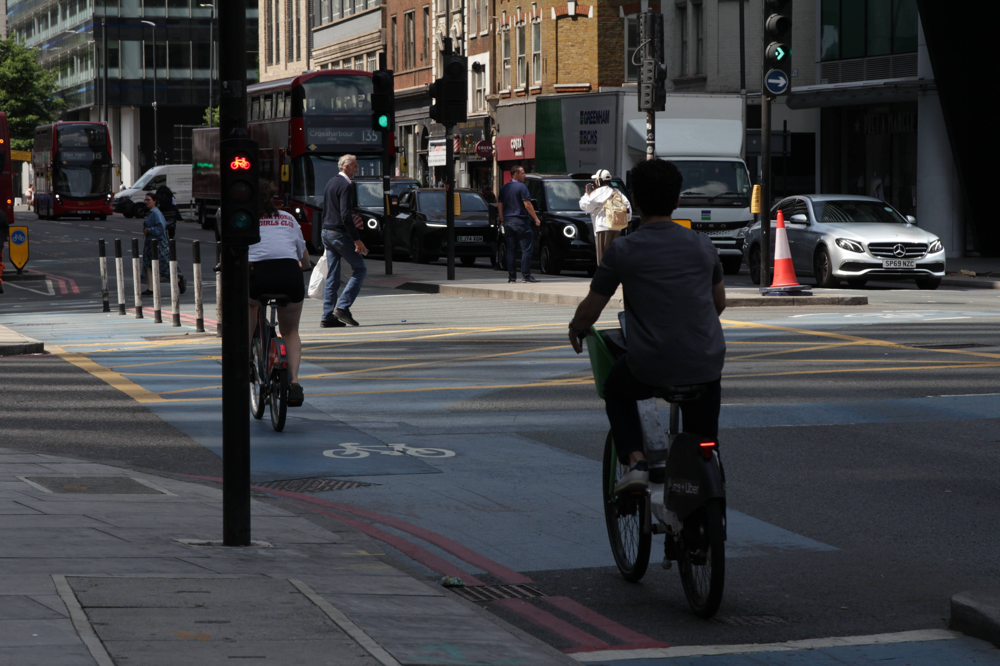
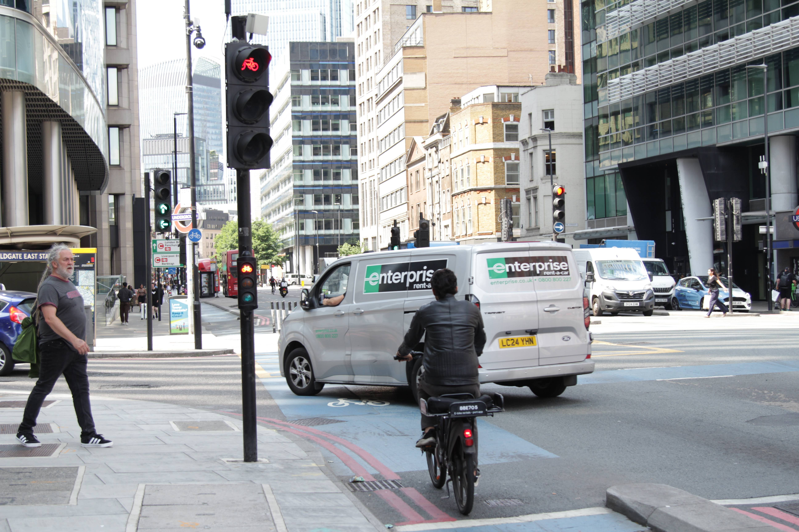
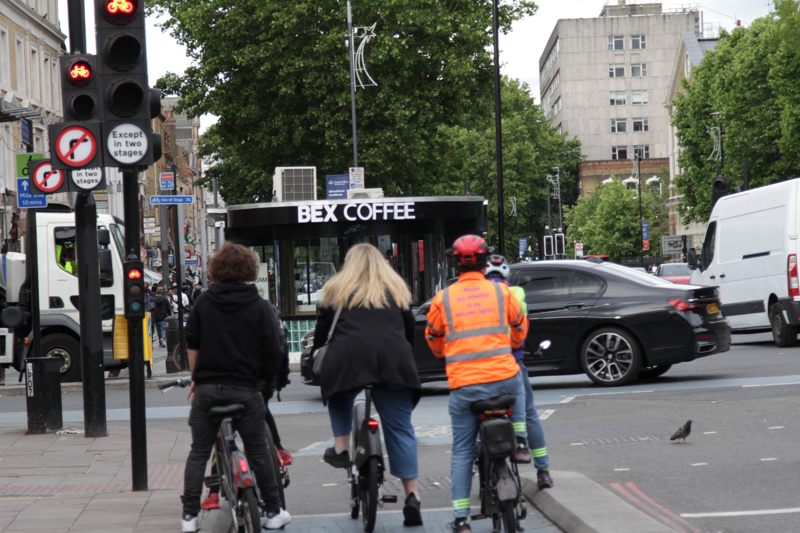
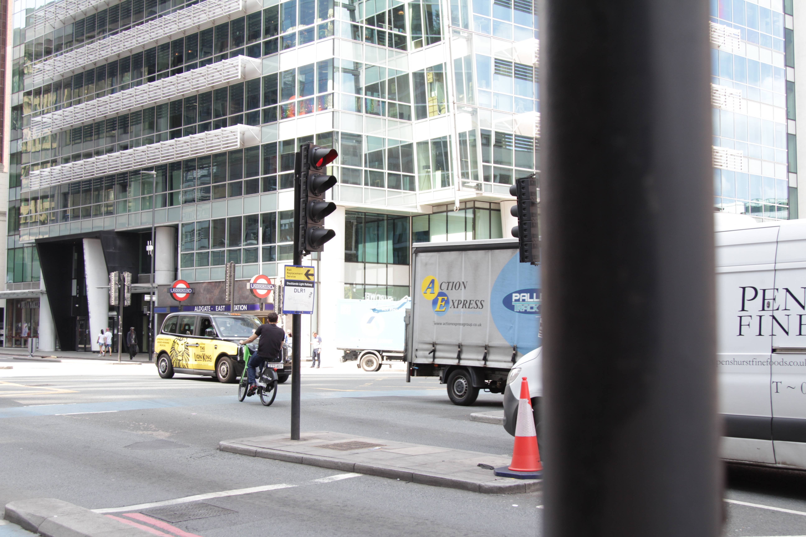
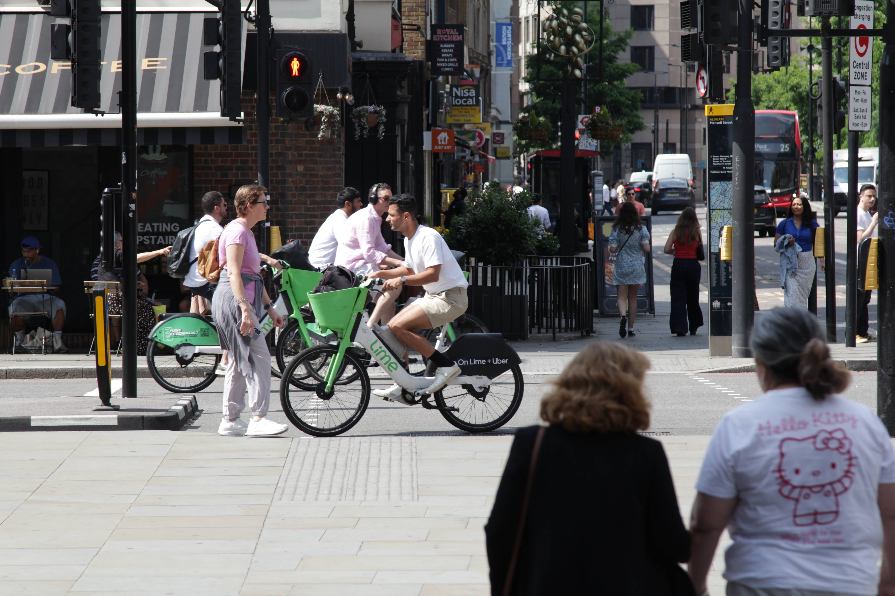

Whitechapel Road Superhighway
Aldgate East to Mile End
This route exemplifies the "fastest" choice, often reflecting infrastructure designed for vehicle speed, similar to distribution roads. Cyclists might prioritise such routes for efficiency, especially during morning commutes when being on time is key. For shorter distances, cyclists are notably more likely to choose the fastest path.
A Guy With A Bag
Around The Congestion
Blazing Speeds In Whitechapel
Carry Bike

Choosing Road Over Cycle Lane

Dangerous Intersection

Lime Bikes And Traffic Lights Do Not Coexist

Passing Through The Red Light

Patiently Waiting For Green Light

Red Light Intersection Crossing

So Many Lime Bikes
Useless Red Light

Waiting For Red The Other Doesn't